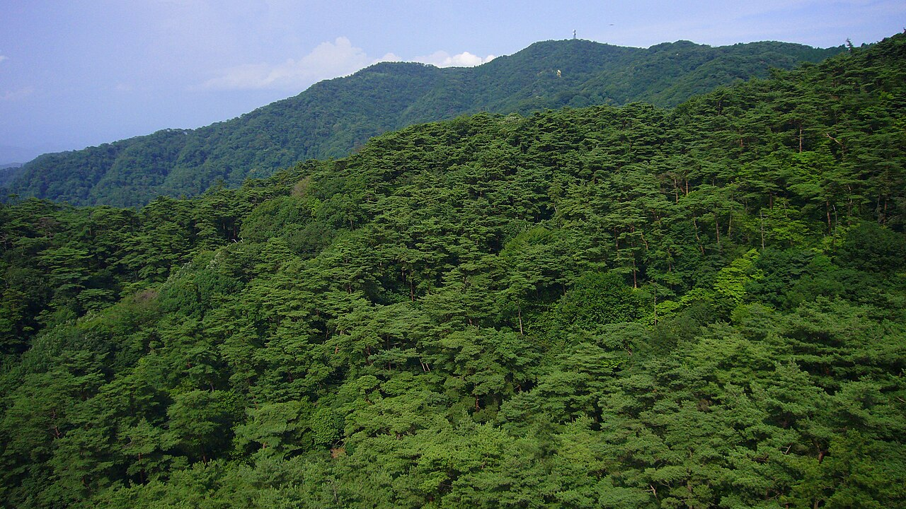
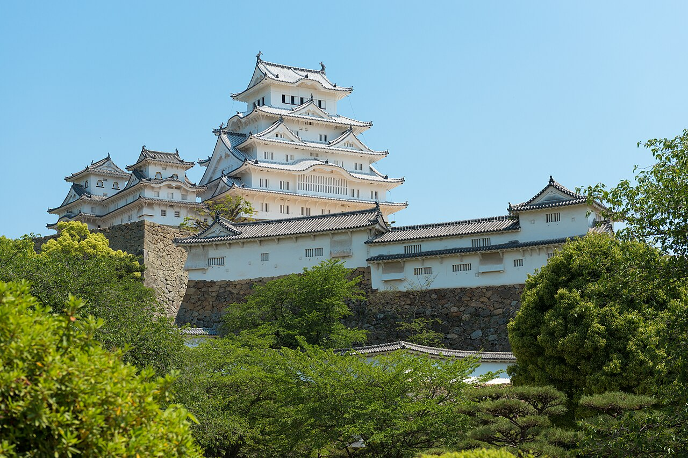
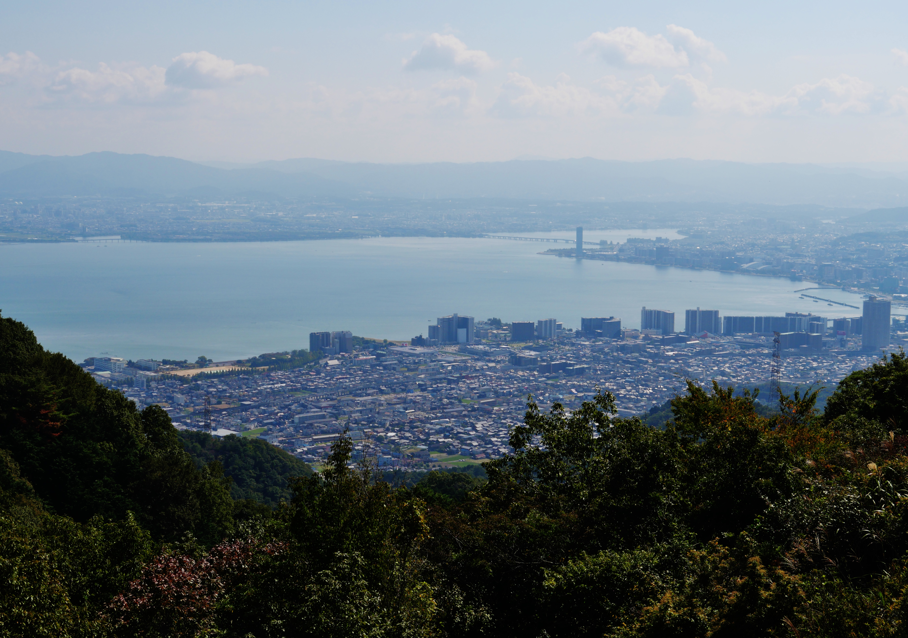
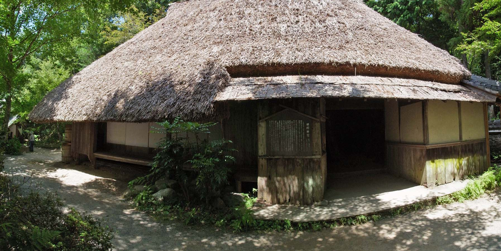
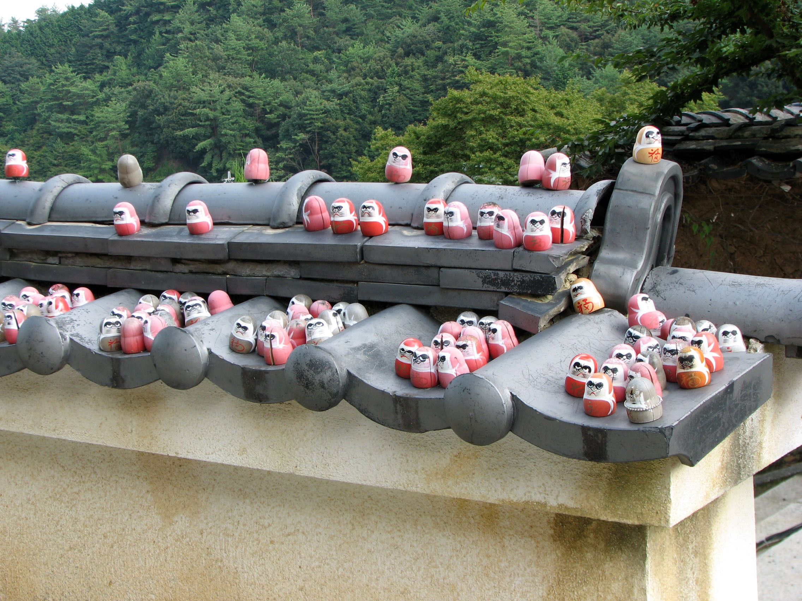
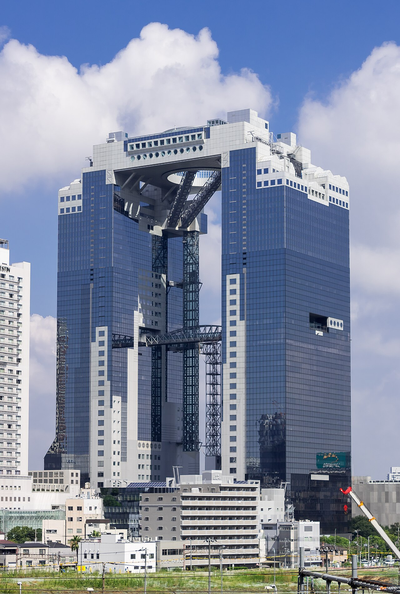
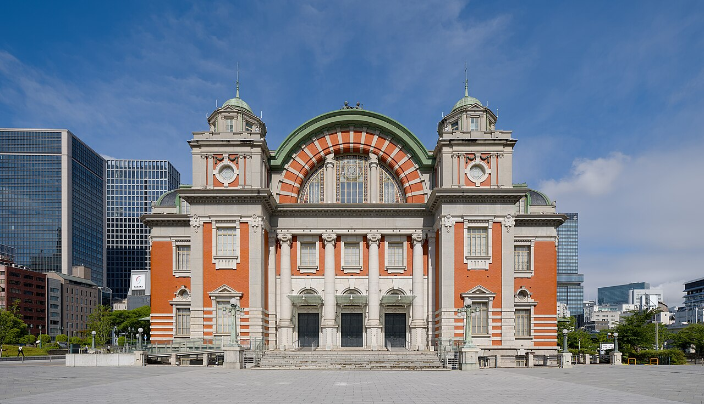
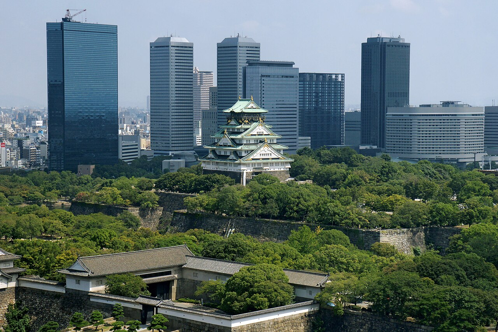

關西名景深度專題 ✕ 社群實戰指南庫
點擊下方任一專題卡片，即可開啟獨立專屬攻略頁（內含高清實拍、歷史傳奇典故、分步動線、名店菜單與背包客棧/Mobile01/Threads 旅人心得）。

Day 3 全日 ✕ 860m 避暑 ✕ 千年金湯 ✕ 神戶牛🌲 神戶・六甲山 860m 避暑 ✕ 有馬溫泉金湯 ✕ 神戶牛
昭和登山纜車、三分一博志六甲枝垂（24°C 天然避暑）、空中索道飛越峽谷、太閣金之湯足湯、5秒現烤生碳酸煎餅與 Mouriya 正宗神戶牛。

🏯 兵庫備選特輯 ✕ 國寶第一名城🏯 國寶姬路城登大天守 ✕ 好古園活水軒（備選攻略）
400年不滅純木造大天守閣、2026新票制（18歲以下免費）、三大黃金機位與好古園活水軒星鰻御膳。

Day 2 上午 ✕ 海拔 1,100m 避暑🌲 滋賀・琵琶湖露台 1.5km 漫步 ✕ 近江牛
400萬年古代湖、徐福蓬萊仙山、10:15~12:30無霧窗、Webket掃碼直通、天際鞦韆與德川御用近江牛。
 Day 2 下午 ✕ 400年水鄉 ✕ 吉卜力草屋
Day 2 下午 ✕ 400年水鄉 ✕ 吉卜力草屋
🚣 滋賀・近江八幡水鄉手搖船 ✕ La Collina 甜點草屋
400年八幡堀水鄉手搖船、《神劍闖江湖》取景舞台、藤森照信童話草屋頂、CLUB HARIE 現烤熱年輪蛋糕與千成亭 A5 近江牛。

🎒 滋賀備選特輯 ✕ 300年忍者機關屋🥷 滋賀・甲賀之里忍術村與機關屋敷（備選攻略）
適合國小～國中生親子動態放電！300年望月家暗器旋轉壁、土遁地道、實鐵手裏劍投擲與水蜘蛛輕功。

Day 4 上午 ✕ 關西第一勝運之寺⛩️ 大阪・勝尾寺滿山紅達摩 ✕ 箕面大瀑布
勝王寺謙卑改名典故、達摩點睛開運、寺外計程車直達瀑布避坑、33m白絹瀑布與1300年炸楓葉。

Day 1 下午 ✕ 173m 淀川落日🏛️ 大阪・中之島文化水岸 ✕ 藍天大廈 173m 夕陽
天下廚房堂島米市、岩本榮之助義商傳奇、安藤忠雄巨大青蘋果、原廣司1,000噸空中吊升奇蹟。

Day 1 遲午餐 ✕ 15:00 避峰名店🍕 中之島名店對決：GARB披薩 vs AWAKE蛋包飯
450°C 櫻木柴燒拿坡里瑪格麗特披薩 vs 1918 百年公會堂米其林主廚紅酒牛肉燴醬蛋包飯。

Day 3 傍晚 ✕ 避開 90% 團客🏯 大阪城傍晚水岸漫步 ✕ MIRAIZA 點燈
豐臣秀吉黃金城掩埋之謎、108噸第一巨石「蛸石」、1931陸軍古堡露台平視天守閣夜間金光。
🛍️ 大丸梅田最終採買：HARBS ✕ 小倉山莊退稅
HARBS 8吋水果千層避峰攻略、寶可夢任天堂旗艦周邊、百人一首和歌仙貝、14:30前快速退稅。